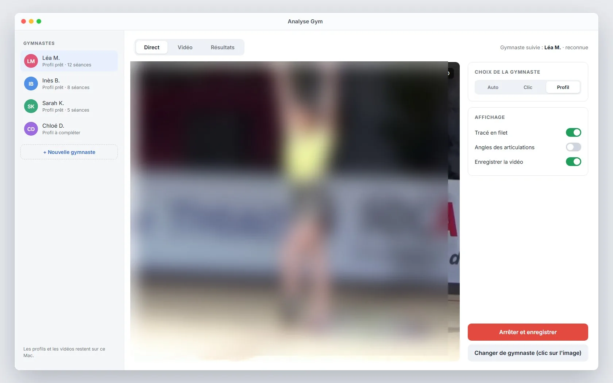

01
Analyse vidéo pour un entraîneur de gymnastique
Mission freelance · conception et développement
Une application qui suit une gymnaste précise parmi d'autres personnes, en direct ou sur vidéo. Elle tourne en local sur le Mac du client.
98 % des images suivies sur une finale filmée en 1080p60.